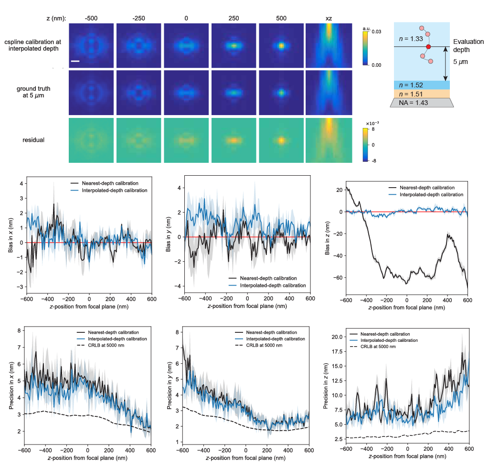
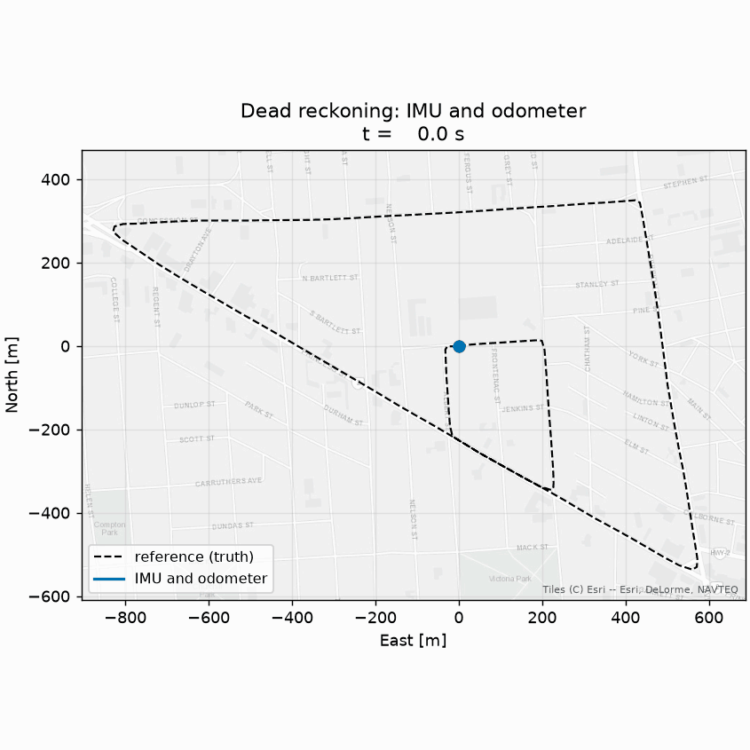
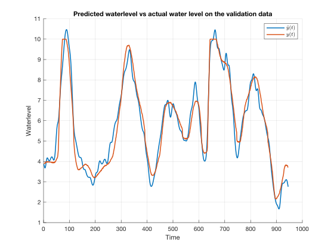

Hi, I am a MSc Systems & Control graduate with a background in mechanical engineering. My research focused on modelling optical aberrations and the point spread function for 3D single-molecule localization microscopy. I love using modelling, estimation, and control to
understand and improve real-world systems. Currently, I am developing a model-based
irrigation system for a basil plant and working on a sensor fusion project. Outside of engineering, I enjoy cooking such as making my own ice cream and tarts,
as well as the occasional dance to groovy techno tunes!
Work

Point Spread Function Calibration using Splines
A microscope calibration that still holds several micrometres deep into a sample,
not just at the coverslip.
Calibrated cubic spline PSF models at several imaging depths rather than one,
interpolating between them with Catmull-Rom splines to reconstruct a model at any
depth in between. In simulation at 5 micrometres this cut mean absolute axial
bias from over 294 nm to below 5 nm, and improved lateral precision by 62%
in x and 61% in y. On experimental bead data the axial bias dropped 80%.
Catmull-Rom splines
Single-molecule localization microscopy
Maximum Likelihood Estimation
Levenberg-Marquardt optimization
Modelling
Image preprocessing
Python
FIJI
MATLAB
Control of a reaction wheel pendulum
An inverted pendulum that holds itself upright by spinning a flywheel.
Modelled the system with Euler-Lagrange. Performed system identification to estimte the physical parameters. Used a Luenberger observer to access the pendulum's own angular velocity. LQR and MPC were implemented and tested in simulation and on the real setup. Both controllers could stabilize the pendulum around upright unstable equilibrium and reject disturbances.
LQR
MPC
State Estimation
System Identification
Disturbance Rejection
MATLAB

Vehicle localization using sensor fusion
A vehicle keeping track of where it is after the GNSS signal drops out.
Fused a MEMS IMU, wheel odometry and GNSS on real driving data from the NavINST
dataset, with the tactical grade sensors held back as ground truth and never fed to
the estimator. State is 2D: east, north, heading, forward speed and gyro bias. All
estimators written from scratch in NumPy, no filtering libraries. The dead reckoning
baseline is measured: over five minutes without GNSS, IMU and odometer together drift
5.67 m RMSE where the IMU alone drifts 2,250 m, a factor of 400. Extended and Unscented Kalman filter have yet to be implemented.
State estimation
sensor Fusion
EKF
UKF
IMU
GNSS
Data processing
Python

System Identification with a regularized Volterra Tensor
Network
Black-box modelling of a nonlinear system using a Volterra tensor network, with a tensor train decomposition to avoid the exponential growth in the number of coefficients.
Performed system identification on the Cascaded Tanks with Overflow benchmark dataset with a Volterra series. The number of coefficients of a Volterra model grows exponentially with model order and memory, so they were compressed into a tensor train. Derived the regularized least-squares update for fitting one core at a time (Alternating Least Squares), and a rank-adaptive version (Modified Alternating Least Squares), the latter of which was only derived but not implemented. Implemented the regularized ALS in MATLAB, including a simulation function that predicts the output without rebuilding the full Volterra kernels. Studied rank against regularization strength over random initializations. High ranks without regularization overfit, regularization reduces this but can underfit at very low ranks, and low ranks worked well and were the fastest.
Tensor Train decomposition
Tensor networks
System Identification
Regularization
Alternating Least Squares
MATLAB
Education
MSc Systems and Control
Delft University of Technology
Sep 2023 to Apr 2026
BSc Mechanical Engineering
Delft University of Technology
Sep 2019 to Jul 2023
Minor Mechanical Engineering
University of British Columbia
Jan 2022 to May 2022
Experience
Junior Manufacturing Execution System Engineer
Batenburg Bellt
Aug 2026 to Sep 2026
Production monitoring systems built on PLC signals, services and MySQL. Debugging
across the stack, with direct client contact.
Host
TU Delft
May 2024 to Jul 2026
First point of contact for everyone coming through the door. Facilitated communication between visitors and nine internal departments.
Technical Specialist
Apple
Jul 2022 to Sep 2023
Troubleshot and diagnosed technical issues with Apple hardware and software. Handled sensitive and confidential information in accordance with GDPR requirements.
Contact
I am seeking engineering positions signal processing, sensor fusion and data science!